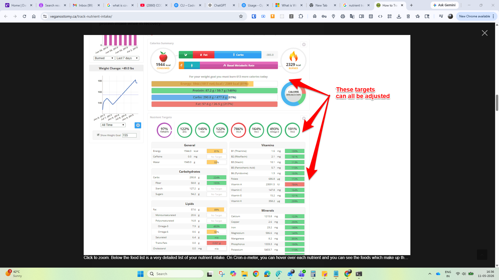

▣
Snap your meal
Take a photo or upload one from your phone. Guests can start with manual food search.
Nutrition clarity, one meal at a time
Upload a meal photo. Review the foods and portions. Get a practical estimate of calories, protein, carbs, fat, and key nutrients.
Guests can estimate nutrition manually. Registered users can sign in for AI photo scanning, saved meals, and dashboard history.

NutriMate does the tedious first pass. You review every item before anything is saved.
Take a photo or upload one from your phone. Guests can start with manual food search.
Check detected foods, confidence notes, serving sizes, and exact grams where needed.
Understand calories, macros, and key nutrients, then save the reviewed meal to your history.
More than a calorie count
See the details that matter without turning every meal into homework.
Made for real life
NutriMate labels nutrition as estimates, keeps uncertain foods editable, and saves reviewed meals only for signed-in users. It’s useful guidance—not medical advice.
Try it now
Upload a photo and start a free manual estimate. Sign in to use AI analysis and save meals.
Nutrition values are estimates. Guests can manually add food items; signed-in users can also run AI photo analysis.
Upload a photo, then review the detected items.
| Food and review | Amount | Portion |
|---|
Use this for food that was missed by AI or was not visible in the photo.
| Food and review | Amount | Portion |
|---|
Date-wise and meal-wise reviewed records.